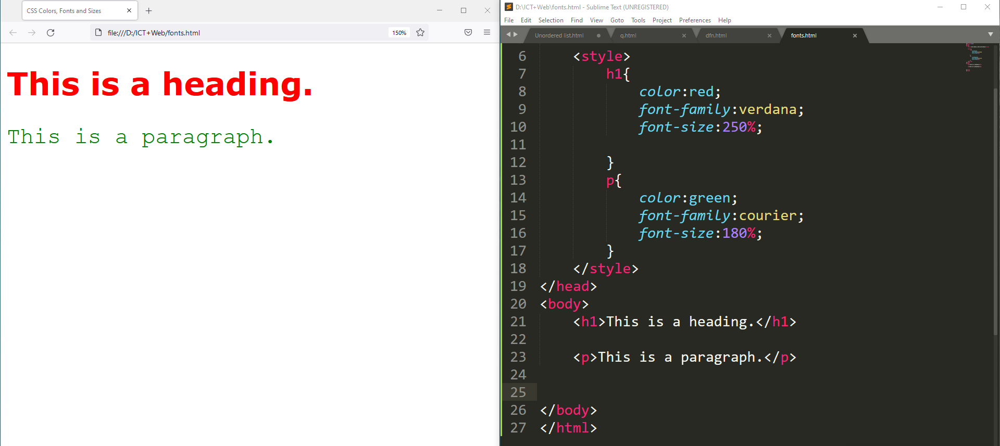

Cascading Style Sheets (CSS) is a style sheet language used for describing the presentation of a document written in a markup language such as HTML.
There are 3 ways to added to HTML documents.
used to apply a style to a single HTML element
putting CSS into an HTML file instead of an external CSS.
used to apply a style to a single HTML page
adding CSS code in the <head> section of the document.
used to define the style for many HTML pages
a separate CSS file that can be accessed by creating a link within the head section of the webpage.

color defines the text color
font-family property defines change font style
fond-size property defines change the text size
The standard way to create HTML borders is to use CSS. Using CSS, you can create a border around any HTML element. There are a range of CSS
properties that you can use to define borders but the shorthand border property is the most concise way.. Below are some examples of what you can do with HTML, borders, and CSS.
The CSS padding properties are used to generate space around an element's content, inside of any defined borders. With CSS, you have full control over the padding. There are properties
for setting the padding for each side of an element (top, right, bottom, and left).
All the margin properties can have the following values:
Margins are used to create space around elements, outside of any defined borders.
With CSS, you have full control over the margins.
There are properties for setting the margin for each side of an element (top, right, bottom, and left).